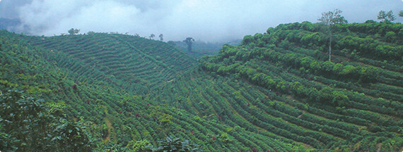

스타벅스는 온도, 일광, 강우량 등 커피 재배에 이상적인 기후가
나타나는 고지대에서 생산된 아라비카 커피만 구매합니다.
그 이유는 고지대에서 재배된 원두는
풍부한 풍미와 세련된 바디감과 산미를 가지고 있기 때문입니다.
이를 위해 스타벅스는 농장과 농부들의 곁에서 커피 경작을 함께 연구합니다.
스타벅스 커피는 각 산지의 커피가 가지고 있는 최상의 풍미와 더불어
산지의 농부와 스타벅스의 노력이 담겨있습니다.

스타벅스는 언제나 세계에서 가장 훌륭한 커피를 구매합니다.
이를 위해 스타벅스 커피 전문가는 한 사람당 1년에 25만 잔 이상의 커피를 테이스팅 하며,
산지의 농부와 농장을 직접 방문합니다.
농부들과의 지속적인 협업과 거래를 통해 매년 고품질의 커피를 생산하고,
윤리적인 구매를 위한 활동을 지속합니다.

단단한 생두가 풍미 가득하고 향기로운 원두가 되려면, 섬세한 로스팅 기술이 필요합니다.
스타벅스의 로스팅은 1971년부터 시작되었습니다.
오랜 세월 경험을 쌓아온 최고의 로스팅 기술은 예술이자 과학입니다.
로스팅 과정에서 강한 열을 가하면 생두에서 수분이 빠져나가고,
당분과 전분이 오일 성분으로 바뀝니다.
스타벅스 커피의 풍부한 맛과 향은 대부분 이 오일에서 나옵니다.
열이 너무 강하면 원두가 너무 어둡게 로스팅 되고 커피의 오일이 너무 많이 타버립니다.
반대로 열이 너무 약하면 커피의 오일이 충분히 방출되지 않고 시큼한 풍미만 남습니다.
그래서 생두가 가진 본연의 풍미를 최대한 발현시킨 커피 한 잔을 얻기 위해,
커피마다 로스팅의 시간과 온도를 약간씩 다르게 조절해야 합니다.
스타벅스는 커피잔에 담긴 최종 결과물이 어떠해야 하는지를 가장 먼저 생각합니다.
“강조하고 싶은 풍미는 무엇인가, 무엇이 느껴져야 하는가?”
그리고 풍부한 경험을 가진 스타벅스 팀에서 각각의 블렌드를 개발하고 제조합니다.
예를 들어, 풍성한 저녁식사에 풍미를 더하기 위해 블렌드를 만들고,
싱글 오리진 커피에서 찾아볼 수 없는 매우 복잡하고 완성된 맛의 커피를 만들기도 하고,
계절에 어울리는 블렌드를 개발합니다.
또한, 고객과 파트너들이 기억하고 있는 인기 블렌드의 특징을 생생하게 되살려내기도 합니다.
이러한 최상의 블렌딩 기술은 전문가들의 경력을 합친 75년이라는 숫자가 말해줍니다.


 스타벅스 디카페인 커피를 만드는 CO2 추출 방식을 소개합니다.
스타벅스 디카페인 커피를 만드는 CO2 추출 방식을 소개합니다.